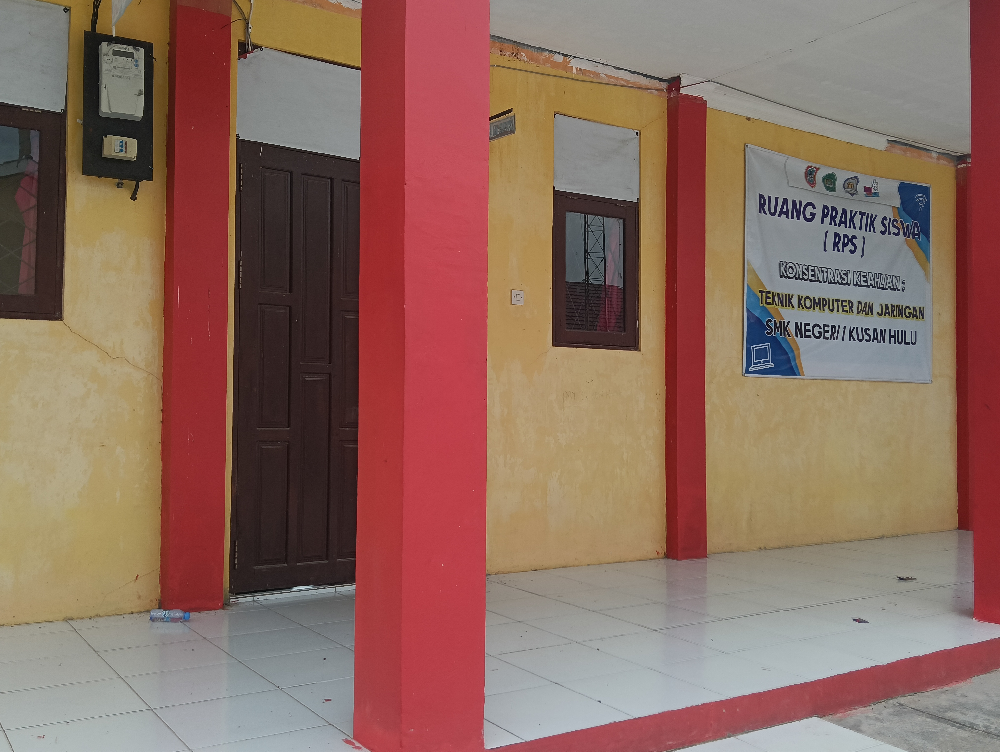

Program Keahlian
SMK Negeri 1 Kusan Hulu memiliki beberapa program keahlian yang dirancang untuk membekali peserta didik dengan pengetahuan dan keterampilan sesuai bidangnya.

ATP
Agribisnis Tanaman Perkebunan
Program keahlian ini mempelajari proses budidaya tanaman perkebunan, mulai dari persiapan lahan, pembibitan, penanaman, pemeliharaan, hingga pemanenan dan pengelolaan hasil perkebunan.

TKR
Teknik Kendaraan Ringan
Program keahlian ini mempelajari dasar-dasar otomotif, perawatan dan perbaikan kendaraan ringan, sistem mesin, kelistrikan kendaraan, serta pemeriksaan komponen kendaraan.

BDP
Bisnis Daring dan Pemasaran
Program keahlian ini mempelajari kegiatan bisnis dan pemasaran, termasuk pemasaran digital, pelayanan pelanggan, penjualan, serta pemanfaatan teknologi dalam dunia usaha.

TKJ
Teknik Komputer dan Jaringan
Program keahlian ini mempelajari perangkat komputer, sistem operasi, instalasi dan konfigurasi jaringan, dasar pemrograman, serta pemeliharaan dan troubleshooting jaringan komputer.